Ejercicios de la ecuación de la recta tangente y normal
1Dada la parábola f(x) = x2, hallar los puntos en los que la recta tangente es paralela a la bisectriz del primer cuadrante.
2Dada la curva de ecuación f(x) = x2 − 3x − 1, halla las coordenadas de los puntos de dicha curva en los que la tangente forma con el eje OX un ángulo de 45°.
3Determinar los valores del parámetro b, para qué las tangentes a la curva de la función f(x) = b2x3 + bx2 + 3x + 9 en los puntos de abscisas x = 1, x = 2 sean paralelas.
4Calcular los puntos en que la tangente a la curva y = x3 − 3x2 − 9x + 5 es paralela al eje OX.
5Se ha trazado una recta tangente a la curva y= x3, cuya pendiente es 3 y pasa por el punto (0,−2). Hallar el punto de tangencia.
6Buscar los puntos de la curva f(x) = x4 + 7x3 + 13x2 + x +1, para los cuales la tangente forma un ángulo de 45º con OX.
7Dada la función f(x) = tg x, hallar el ángulo que forma la recta tangente a la gráfica de la función f(x) en el origen, con el eje de abscisas.
8Calcular la ecuación de la tangente y de la normal a la curva f(x) = ln tg 2x en el punto de abscisa: x = π/8.
9Hallar los coeficientes de la ecuación y = ax2 + bx + c, sabiendo que su gráfica pasa por (0, 3) y por (2, 1)., y en este último punto su tangente tiene de pendiente 3.
10La gráfica de la función y = ax2 + bx + c pasa por los puntos (2, 3) y (3, 13). siendo la tangente a la misma en el punto de abscisa 1 paralela a la bisectriz del primer cuadrante. Hallar el valor numérico de a, b y c.
11Dada la función f(x) = ax3 + bx2 + cx + d, determina a, b, c y d; sabiendo que la curva pasa por los puntos (−1, 2) (2, 3), y que las tangentes a ellas en los puntos de abscisa 1 y −2 son paralelas al ejes de abscisas.
12¿En qué punto de la curva y = ln x, la tangente es paralela a la cuerda que une los puntos (1, 0) y (e, 1)?
13Dada la ecuación 9x2 + y2= 18, hallar la ecuación de la recta tangente que sea paralela a la recta de ecuación 3x − y + 7 = 0.
14Hallar el área del triángulo determinado por los ejes de coordenadas y la tangente a la curva xy = 1 en el punto x = 1.
- 1
- 2
- 3
- 4
- 5
- 6
- 7
- 8
- 9
- 10
- 11
- 12
- 13
- 14
Ejercicio 1 resuelto
Dada la parábola f(x) = x2, hallar los puntos en los que la recta tangente es paralela a la bisectriz del primer cuadrante.
y = xm= 1
f'(a) = 1.
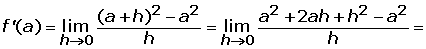
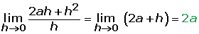
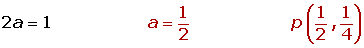
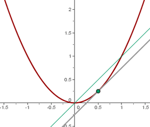
Ejercicio 2 resuelto
Dada la curva de ecuación f(x) = x2 − 3x − 1, halla las coordenadas de los puntos de dicha curva en los que la tangente forma con el eje OX un ángulo de 45°.

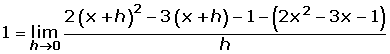
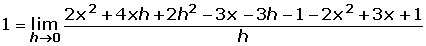
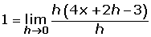
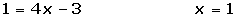

Ejercicio 3 resuelto
Determinar los valores del parámetro b, para qué las tangentes a la curva de la función f(x) = b2x3 + bx2 + 3x + 9 en los puntos de abscisas x = 1, x = 2 sean paralelas.
Para que sean paralelas se tiene que cumplir que las derivadas en x = 1 y x = 2 sean iguales.
f'(1) = f'(2)
f'(x) = 3b2x2 + 2bx + 3
f'(1) = 3b2 + 2b + 3
f'(2) = 12b2 + 4b + 3
3b2 + 2b + 3 = 12b2 + 4b + 3
9b2 + 2b = 0
b = 0 b = −2/9
Ejercicio 4 resuelto
Calcular los puntos en que la tangente a la curva y = x3 − 3x2 − 9x + 5 es paralela al eje OX.
y' = 3x2 − 6x − 9; x2 − 2x − 3 = 0 (simplificando por 3)
x1 = 3 y1 = −22
x2 = −1y2 = 10
A(3, −22) B(−1, 10)
Ejercicio 5 resuelto
Se ha trazado una recta tangente a la curva y= x3, cuya pendiente es 3 y pasa por el punto (0,−2). Hallar el punto de tangencia.
Sea el punto de tangencia (a, f(a))
f' (x)= 3x2f' (a)= 3a2
3a2=3a = ±1
Las ecuaciones de la rectas tangentes son:
a = 1 f(a) = 1
y − 1 = 3(x − 1) y = 3x−2
a = −1 f(a) = −1
y + 1= 3(x + 1) y = 3x + 2
El punto (0, −2) pertenece a la recta y = 3x−2.
Por tanto el punto de tangencia será (1, 1) .
Ejercicio 6 resuelto
Buscar los puntos de la curva f(x) = x4 + 7x3 + 13x2 + x +1, para los cuales la tangente forma un ángulo de 45º con OX.
m = 1
f'(x) = 4x3 + 21x2 + 26x +1
4x3 + 21x2 + 26x +1 = 1
x = 0 x = −2 x z= 13/4
P(0, 4) Q(−2, 4) R(13/4, 1621/256)
Ejercicio 7 resuelto
Dada la función f(x) = tg x, hallar el ángulo que forma la recta tangente a la gráfica de la función f(x) en el origen, con el eje de abscisas.
f′(x) = 1 + tg² x f′(0) = 1 = m
y = x
α = arc tg 1 = 45º
Ejercicio 8 resuelto
Calcular la ecuación de la tangente y de la normal a la curva f(x) = ln tg 2x en el punto de abscisa: x = π/8.

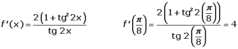

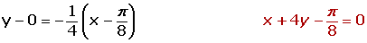
Ejercicio 9 resuelto
Hallar los coeficientes de la ecuación y = ax2 + bx + c, sabiendo que su gráfica pasa por (0, 3) y por (2, 1)., y en este último punto su tangente tiene de pendiente 3.
Pasa por (0, 3) 3 = c
Pasa por (2, 1) 1= 4a + 2b + c
y' = 2ax + b 3 = 4a + b
Resolviendo el sistema se obtiene:
a = 2 b = −5 c = 3
Ejercicio 10 resuelto
La gráfica de la función y = ax2 + bx + c pasa por los puntos (2, 3) y (3, 13). siendo la tangente a la misma en el punto de abscisa 1 paralela a la bisectriz del primer cuadrante. Hallar el valor numérico de a, b y c.
Pasa por (2, 3) 3 = 4a + 2b + c
Pasa por (3, 13)13 = 9a + 3b +c
y' = 2ax + b 1 = 2a + b
Resolviendo el sistema se obtiene:
a = 3 b = −5 c =1
Ejercicio 11 resuelto
Dada la función f(x) = ax3 + bx2 + cx + d, determina a, b, c y d; sabiendo que la curva pasa por los puntos (−1, 2) (2, 3), y que las tangentes a ellas en los puntos de abscisa 1 y −2 son paralelas al ejes de abscisas.
f(−1) = 2 −a + b − c + d = 2
f(2) = 3 8a + 4b + 2c + d = 3
f′(−1) = 0 3a + 2b + c = 0
f′(2) = 0 12a − 4b + c = 0
a = − 2 /9 b = − 1 /3 c = 4/3 d = 31/9
Ejercicio 12 resuelto
¿En qué punto de la curva y = ln x, la tangente es paralela a la cuerda que une los puntos (1, 0) y (e, 1)?
La pendiente de la cuerda tiene que ser igual a la derivada de la función.
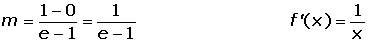
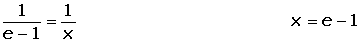
Ejercicio 13 resuelto
Dada la ecuación 9x2 + y2= 18, hallar la ecuación de la recta tangente que sea paralela a la recta de ecuación 3x − y + 7 = 0.
Sea el punto de tangencia (a, b)
y = 3x + 7 m = 3
Derivando implícitamente tenemos:

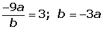
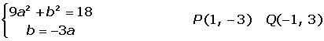


Ejercicio 14 resuelto
Hallar el área del triángulo determinado por los ejes de coordenadas y la tangente a la curva xy = 1 en el punto x = 1.


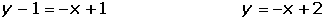


 Ejercicios
Ejercicios